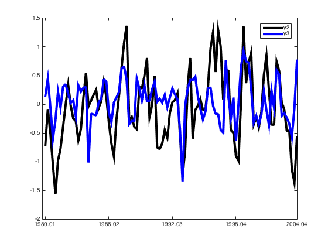

Read in Data and Use Tsdata Instances
This script shows how to read in data and define a Tsdata object. Understanding how time series data are stored and used with the Tsdata class is essential for efficient use of the PROFOR Toolbox.
See the matlab code corresponding to this help file to run examples directly in Matlab.
Contents
1) Data inputted directly (on the fly) into MATLAB
Input some data and then make the Tsdata object. The 'flydata' vector could be typed in at the command prompt >> or cut and pasted from a column in a spreadsheet.
flydata = [1.0 2.0 3.5 1.2 2.3 3.1 0 0.5]';
Assign frequency and dates as shown below. (The date convention used in the toolbox was originally suggested by Christie Smith.)
(i) freq: we set the frequency to be quarterly by 'q', but it could be monthly 'm' or daily 'd'.
(ii) dates: in the example below we read in data starting 2000 ending 2001, where in 2000 the first observation is quarter 1 and in 2001 the last observation is quarter 4. In total there are 8 observations, as inputted above in 'flydata'. The term 'freq' is a standard required input.
freq = 'q'; dates = latttt(2000,2001,1,4,'freq',freq);
For more information on latttt, type 'help latttt'. The resulting output is shown below.
help latttt
latttt - Make time vector different date formats. To be used for example in
conjucture with timeseries function etc. The default for this fn is
cs date format, but it can also produce matlab date formats
Input:
bYear = numeric. First year of sample, eg. 2000
eYear = numeric. Last year of sample, eg. 2009
bPeriod = numeric. First observation period of sample. Depending on frequency
(see below), this can be eg. 1 for quarter one.
ePeriod = numeric. Last observation period of sample. Depending on frequency
(see below), this can be eg. 1 for quarter one.
varargin = optional. String followed by input value or string. Can be
one or more of the following:
'freq' = string followed by a numeric value, either 1,4,12 or 365
for yearly, quarterly, monthly or daily frequencies respectively.
Default=4. Can also be string, but will then be converted in the
program, eg. a, q, m, d for yearly, quarterly, monthly or daily
frequencies respectively.
'format' = string followed by either a string or a number
indicating the format of the output timeVector.
Default=cs This is Christie Smith dates. These are numberical date
numbers, eg. 2001.01 for Q1 2001, and 2001.200 for day 200 in 2001
If MATLAB dates are to be used see MATLAB datestr function
for the different otions and format specifications. Both numerical
and string indicators can be used.
Output:
timeVector = string or numerical date vector. Default is cs date vector
NOTE: This function is intended to do the same as csttt with two
extensions: 1) It takes into account years with 366 days when using the
daily frequency. 2) It can also handle other date formats than the cs
date format. It calls upon the maTimeVec function to do this.
Example of use:
Yearly time vector;
bYear=2000;eYear=2009;bPeriod=1;ePeriod=4;freq=1;
timeVector=latttt(bYear,eYear,bPeriod,ePeriod,'freq',freq)
See also:
convertMadToNum, maTimeVec and csttt
2) Reading data from a spreadsheet
Use MATLAB's 'xlsread' command. For more information, type in 'help xlsread'. Note: some researchers have found issues with the xlsread command -- might be wise to google search on that. The resulting output is shown below.
help xlsread
XLSREAD Read Microsoft Excel spreadsheet file.
[NUM,TXT,RAW]=XLSREAD(FILE) reads data from the first worksheet in
the Microsoft Excel spreadsheet file named FILE and returns the numeric
data in array NUM. Optionally, returns the text fields in cell array
TXT, and the unprocessed data (numbers and text) in cell array RAW.
[NUM,TXT,RAW]=XLSREAD(FILE,SHEET) reads the specified worksheet.
[NUM,TXT,RAW]=XLSREAD(FILE,SHEET,RANGE) reads from the specified SHEET
and RANGE. Specify RANGE using the syntax 'C1:C2', where C1 and C2 are
opposing corners of the region. Not supported for XLS files in BASIC
mode.
[NUM,TXT,RAW]=XLSREAD(FILE,SHEET,RANGE,'basic') reads from the
spreadsheet in BASIC mode, the default on systems without Excel
for Windows. RANGE is supported for XLSX files only.
[NUM,TXT,RAW]=XLSREAD(FILE,RANGE) reads data from the specified RANGE
of the first worksheet in the file. Not supported for XLS files in
BASIC mode.
The following syntaxes are supported only on Windows systems with Excel
software:
[NUM,TXT,RAW]=XLSREAD(FILE,-1) opens an Excel window to select data
interactively.
[NUM,TXT,RAW,CUSTOM]=XLSREAD(FILE,SHEET,RANGE,'',FUNCTIONHANDLE)
reads from the spreadsheet, executes the function associated with
FUNCTIONHANDLE on the data, and returns the final results. Optionally,
returns additional CUSTOM output, which is the second output from the
function. XLSREAD does not change the data stored in the spreadsheet.
Input Arguments:
FILE String that specifies the name of the file to read.
SHEET Worksheet to read. One of the following:
* String that contains the worksheet name.
* Positive, integer-valued scalar indicating the worksheet
index.
RANGE String that specifies a rectangular portion of the worksheet to
read. Not case sensitive. Use Excel A1 reference style.
If you do not specify a SHEET, RANGE must include both corners
and a colon character (:), even for a single cell (such as
'D2:D2').
'basic' Flag to request reading in BASIC mode, which is the default for
systems without Excel for Windows. In BASIC mode, XLSREAD:
* Only reads XLS or XLSX files.
* For XLS files, imports the entire active range of the worksheet.
* For XLS files, requires a string to specify the SHEET, and the
name is case sensitive.
* Does not support function handle inputs.
-1 Flag to open an interactive Excel window for selecting data.
Select the worksheet, drag and drop the mouse over the range
you want, and click OK. Supported only on Windows systems with
Excel software.
FUNCTIONHANDLE
Handle to your custom function. When XLSREAD calls your
function, it passes a range interface from Excel to provide
access to the data. Your function must include this interface
(of type 'Interface.Microsoft_Excel_5.0_Object_Library.Range',
for example) both as an input and output argument.
Notes:
* On Windows systems with Excel software, XLSREAD reads any file
format recognized by your version of Excel, including XLS, XLSX,
XLSB, XLSM, and HTML-based formats.
* If your system does not have Excel for Windows, XLSREAD operates in
BASIC mode (see Input Arguments).
* XLSREAD imports formatted dates as strings (such as '10/31/96'),
except in BASIC mode. In BASIC mode, XLSREAD imports all dates as
serial date numbers. Serial date numbers in Excel use different
reference dates than date numbers in MATLAB. For information on
converting dates, see the documentation on importing spreadsheets.
Examples:
% Create data for use in the examples that follow:
values = {1, 2, 3 ; 4, 5, 'x' ; 7, 8, 9};
headers = {'First', 'Second', 'Third'};
xlswrite('myExample.xls', [headers; values]);
moreValues = rand(5);
xlswrite('myExample.xls', moreValues, 'MySheet');
% Read data from the first worksheet into a numeric array:
A = xlsread('myExample.xls')
% Read a specific range of data:
subsetA = xlsread('myExample.xls', 1, 'B2:C3')
% Read from a named worksheet:
B = xlsread('myExample.xls', 'MySheet')
% Request the numeric data, text, and a copy of the unprocessed (raw)
% data from the first worksheet:
[ndata, text, alldata] = xlsread('myExample.xls')
See also XLSWRITE, XLSFINFO, DLMREAD, IMPORTDATA, TEXTSCAN.
Reference page in Help browser
doc xlsread
First, use the file path command, 'filePath', to point to where the data are stored on the computer. In this case,
filePath = 'demots.xlsx'
filePath = demots.xlsx
In the xlsread example shown below:
(i) 'demots.xlsx' is an Excel file with 11 rows and 3 columns in Sheet 1. Column 1 contains the dates, which we do not use here. Column 2, row 1, contains the name "Inflation", then data for the remaining rows. Column 3, row 1, contains the name "GDP growth" and then data for the remaining rows.
(ii) 'data' is defined over column 2 through to the end, as in this instance the Excel file has dates in the first column.
(iii) 'mnemonic' uses the first row of the Excel file where the names are stored (the first number in the brackets: 1), and ignores the first column as it contains dates (ie 2:end).
[X, txt] = xlsread( fullfile(proforStartup.pfRootHelpData, filePath), 'Sheet1');
data = X(:,2:end);
mnemonic = txt(1,2:end);
Here use 10 quarterly observations from 1990.01 through 1992.02. (Switch to 'm' for monthly, etc.)
dates = latttt(1990,1992,1,2,'freq','q');
Define the time series object, 'd', and then define d1 (the first column of 'data') as 'inflation'. The output for 'd1' is shown below.
d = Tsdata(dates,data(:,1),'q', mnemonic{1});
d1 = d(1)
d1 = Series: inflation Frequency: q Sample: 1990.01 - 1992.02 Dates Value 1990.01 1.000 1990.02 2.000 1990.03 3.500 1990.04 1.200 1991.01 2.300 1991.02 3.100 1991.03 0.000 1991.04 0.500 1992.01 0.800 1992.02 2.500 Description:
The following command picks up just GDP growth (the second column of 'data').
dd = Tsdata(dates,data(:,2),'q', mnemonic{2});
This line picks up both variables:
d = [d Tsdata(dates,data(:,2),'q',mnemonic{2})];
3) Reading mixed frequencies from the same spreadsheet
Suppose the quarterly data from demots.xlsx are already loaded (see previous case). Now add some monthly data on the interest rate contained on Sheet 2.
Define 'filePath' first eg, filePath = 'demots.xlsx'.
Note: Sheet 2 in 'demots.xlsx' contains 25 rows and 2 columns. Column 1 contains the dates, which we are not used here. Column 2, row 1, contains the name "interestrate", then data for the remaining rows.
[X,txt] = xlsread(fullfile(proforStartup.pfRootHelpData, 'demots.xlsx'), 'Sheet2'); data = X(:,2:end); mnemonic = txt(1,2:end);
Use the 'dates' function to generate a dates vector as shown below. In this example, the researcher reads in monthly data starting in 1990, month 1 and ending in 1991, month 12. Define the time series object, 'dm', as the first column:
dates = latttt(1990,1991,1,12,'freq','m'); dm = Tsdata(dates,data(:,1),'m',mnemonic{1});
Next, stack all the data together, ie the quarterly data contained in 'd' and the monthly data contained in 'dm'. This is shown below:
d = [d dm]
d = Series: inflation Frequency: q Sample: 1990.01 - 1992.02 Dates Value 1990.01 1.000 1990.02 2.000 1990.03 3.500 1990.04 1.200 1991.01 2.300 1991.02 3.100 1991.03 0.000 1991.04 0.500 1992.01 0.800 1992.02 2.500 Description: Series: GDP growth Frequency: q Sample: 1990.01 - 1992.02 Dates Value 1990.01 2.000 1990.02 2.100 1990.03 3.600 1990.04 1.200 1991.01 2.100 1991.02 3.500 1991.03 0.300 1991.04 0.800 1992.01 0.600 1992.02 2.000 Description: Series: interest rate Frequency: m Sample: 1990.01 - 1991.12 Dates Value 1990.01 0.000 1990.02 0.000 1990.03 0.000 1990.04 0.000 1990.05 0.000 1990.06 0.000 1990.07 0.000 1990.08 0.000 1990.09 0.000 1990.10 0.000 1990.11 0.000 1990.12 0.000 1991.01 0.000 1991.02 0.250 1991.03 0.500 1991.04 0.500 1991.05 0.250 1991.06 0.000 1991.07 0.000 1991.08 0.000 1991.09 0.250 1991.10 0.500 1991.11 0.500 1991.12 0.250 Description:
To stack the quarterly variables in a matrix format (perhaps for a subsequent estimation step) use 'selectData'. 'outData' gives the data; 'sampleDates' shows the associated dates.
[outData, sampleDates] = selectData(d, {'GDP growth','inflation'}, 'q', '1990.01 - 1992.02')
outData = 2.000000000000000 1.000000000000000 2.100000000000000 2.000000000000000 3.600000000000000 3.500000000000000 1.200000000000000 1.200000000000000 2.100000000000000 2.300000000000000 3.500000000000000 3.100000000000000 0.300000000000000 0 0.800000000000000 0.500000000000000 0.600000000000000 0.800000000000000 2.000000000000000 2.500000000000000 sampleDates = 1.0e+03 * 1.990010000000000 1.990020000000000 1.990030000000000 1.990040000000000 1.991010000000000 1.991020000000000 1.991030000000000 1.991040000000000 1.992010000000000 1.992020000000000
If the specified sample in 'selectData' is longer than the available data, PROFOR gives NaN values. In the following example, the end of the sample is 2 quarters longer than the available data.
[outData2, sampleDates2] = selectData(d, {'GDP growth','inflation'}, 'q', '1990.01 - 1992.04')
outData2 =
2.000000000000000 1.000000000000000
2.100000000000000 2.000000000000000
3.600000000000000 3.500000000000000
1.200000000000000 1.200000000000000
2.100000000000000 2.300000000000000
3.500000000000000 3.100000000000000
0.300000000000000 0
0.800000000000000 0.500000000000000
0.600000000000000 0.800000000000000
2.000000000000000 2.500000000000000
NaN NaN
NaN NaN
sampleDates2 =
1.0e+03 *
1.990010000000000
1.990020000000000
1.990030000000000
1.990040000000000
1.991010000000000
1.991020000000000
1.991030000000000
1.991040000000000
1.992010000000000
1.992020000000000
1.992030000000000
1.992040000000000
For more information on selecting variables type 'help Tsdata.selectData'.
help Tsdata.selectData
selectData - selectData method selects data from the Tsdata obj (which can
contain more than one array of Tsdata objects)
Input:
seriesName [cell/cellstr/numeric]
Either cellstr, or cell or numerics. If cellstr, each cell is a
mnemonic. If cell with numerics, each cell is a number. If cellstr,
porgam search for match in menomonics, if cell with numbers, program
search for match among number properties
freq [string/number]
Frequency of data. Follows standard notation.
dateRange [string]
The dateRange you want to extract, e.g. '1990.02-2010.03. If empty,
default is to use the longest sample available.
Output:
outData [array (t x nObjFound)] Contains extracted data. Can
contain nans.
sampleDates [numeric (t x 1)] Cs format
selectionChar [string ]
Contains selected variable names. Will be similar as seriesName, but
might be shorter if some series are not found.
transf [cell]
Extracts the transf property for each selected series puts into common
vector transf.
USAGE: [outData, sampleDates, selectionChar, transf] = ...
selectData(obj, seriesName, freq, dateRange)
Note:
Program makes a output vector/matrix x which can contain nans, i.e. the
different data series can have different lenght. Longest available series
defines the time dimension. Also, you can not mix frequency.
4) Examining the data
a) To check the frequency of the data (recall, d1 is the inflation rate):
d1 = d(1) d1.freq
d1 = Series: inflation Frequency: q Sample: 1990.01 - 1992.02 Dates Value 1990.01 1.000 1990.02 2.000 1990.03 3.500 1990.04 1.200 1991.01 2.300 1991.02 3.100 1991.03 0.000 1991.04 0.500 1992.01 0.800 1992.02 2.500 Description: ans = q
b) To check the data sample:
d1.getSample
ans = 1990.01 - 1992.02
c) Other properties of the data can be explored using the options available under the 'properties' command. The list of options is shown below.
properties(d1)
Properties for class Tsdata:
dataSettings
block
misc
number
desc
ts
mnemonic
freq
sesAdjState
trendAdjState
conversionState
transfState
outlierState
getSample
getMean
getStd
getOutliers
getMissingValues
getData
getDates
getTransfDescription
state
d) Plotting the data. The 'plot' command will call the built in plot function of the Tsdata class, and plot the time series in 'd' - one variable at a time. Note, press a tab on the keyboard to move from one plot to the next. To plot d1, inflation, over time:
d1.plot
e) The data and dates are stored and can be accessed using the following command:
d1_original = [d1.getDates d1.getData];
f) Further information is available from the 'help' command:
help Tsdata
Tsdata - A class to store, load and work with data
This class supports multiple time series objects and is used in all
models in the PROFOR Toolbox
Tsdata Properties:
dataSettings - DataSetting class
block - Optional
misc - Optional
number - Scalar
desc - String
ts - container.Map
mnemonic - String
freq - String
sesAdjState - String, y or n
trendAdjState - String, y or n
conversionState - String, y or n
transfState - String, y or n
outlierState - String, y or n
getSample - String
getMean - Numeric
getStd - Numeric
getOutliers - Numeric
getMissingValues - Logical
getData - Numeric
getDates - Numeric
getTransfDescription - String
state - Logical
Tsdata Methods:
Tsdata - Constructor
convertData - Converts data intro different frequency
intPolData - Internpolates missing values
sesAdjData - Seasonally adjusts data
trendAdjData - Decomposes data into trend and cycle
outlierCorrData - Removes outliers
transformData - Transforms data (growth, log, etc.)
standardizeData - Standardizes data
resetData - Resets data back to state it had when constructed
truncateData - Truncates data
setAll - Helper function for setting all properties (useful if Tsdata array)
selectData - Selects data from Tsdata (array) and returns data matrix
plot - Plot function for Tsdata
Usage:
See <a href="matlab: opentoline(./help/helpFiles/htmlexamples/usingTsdataExample.m,1)">this example file</a>
5) Load data generated within PROFOR
Suppose the researcher has simulated some data from a VAR model, and stored the simulated time series as a Tsdata object. Load the file containing these time series using the standard MATLAB 'load' command.
load( fullfile( proforStartup.pfRootHelpData, 'varData.mat') )
Note: proforStartup.pfRoot points to the root directory of PROFOR.
The object 'd' is of a Tsdata class, size 1 x 4 ie we have a Tsdata object that contains 4 different time series (dates, inflation, GDP growth and the interest rate).
Define:
d1 = d(1);
This constructs a new Tsdata object, d1, which only contains the first time series object in 'd'.
The class is defined as:
class(d1)
ans = Tsdata
The methods associated with the class are given by:
methods(d1)
Methods for class Tsdata:
Tsdata selectData
convertData sesAdjData
disp setAll
intPolData standardizeData
listAllDataTransformations transformData
outlierCorrData trendAdjData
plot truncateData
resetData
Call "methods('handle')" for methods of Tsdata inherited from handle.
6) Tsdata with many time series
The 'd' object loaded above contained 4 time series. (Above only the first variable was used.) Get the varaible names:
{d.mnemonic}
ans =
'y1' 'y2' 'y3' 'y4'
Next, get the transformations (none, in this example):
{d.transfState}
ans =
'n' 'n' 'n' 'n'
Then, check the time series observations for which there are data:
{d.getSample}
ans =
Columns 1 through 3
'1980.01 - 2004.04' '1980.01 - 2004.04' '1980.01 - 2004.04'
Column 4
'1980.01 - 2004.04'
Plot the variables named y2 and y3:
d.plot({'y2','y3'})
 Then extract the data into standard MATLAB matrices:
[outData, sampleDates, selectionChar, transf] = ... selectData(d,{d.mnemonic},'q','2000.01 - 2003.01')
outData =
Columns 1 through 3
1.140660859847026 0.723704747981518 0.725676107236027
2.493329939085113 0.903008933940010 0.262931970574968
1.592358314738908 -0.349105595966657 -0.316205154299418
2.078174000412283 -0.222208849057791 -0.201329626406844
0.309663385316567 -0.404373877978467 -0.354493656589899
-2.634993986315315 -0.137147965057183 -0.183920935692228
1.023517577995740 0.511625185474795 0.225678881916619
-0.417866547650317 0.845258683650138 -0.104446920198797
-2.825660291602265 0.243567342546024 -0.361168560174080
1.858689831588216 -0.354947447581337 0.231884407851575
-0.481857252277454 -0.357079773633026 -0.062425254553539
-1.096260502680965 0.743249991844704 0.593295576058636
0.634076475658256 0.580830735783712 0.515319272357794
Column 4
2.460944339819375
-0.396239728868529
0.619228220673663
-0.240272973716529
-2.512799241438940
-0.445248762656692
1.422639320411996
-1.333728463442063
-1.238607384866258
-0.260586659544696
0.006422676550805
2.798744170039028
1.482965684381630
sampleDates =
1.0e+03 *
2.000010000000000
2.000020000000000
2.000030000000000
2.000040000000000
2.001010000000000
2.001020000000000
2.001030000000000
2.001040000000000
2.002010000000000
2.002020000000000
2.002030000000000
2.002040000000000
2.003010000000000
selectionChar =
'y1' 'y2' 'y3' 'y4'
transf =
'n' 'n' 'n' 'n'
7) Data generated within MATLAB
The following commands generate a data vector, (8x1), within MATLAB, using a normal distribution. Then, define a Tsdata object. (The other commands used here are explained in the examples above.)
data = randn(8,1); freq = 'q'; mnemonic = 'myData'; dates = latttt(2000,2001,1,4,'freq',freq); d = Tsdata(dates,data,freq,mnemonic);
Alternatively, we simulate an AR1 (using the MATLAB econometric toolbox arima). Label the resulting reps as different variables. For more details on the arima toolbox see http://www.mathworks.co.uk/help/econ/simulate-stationary-arma-processes.html
First, check that the toolbox is installed! Then, define the arima process to be simulated:
model = arima('Constant',0.5,'AR',{0.7},'Variance',.1);
Next set the number of reps (we use 100) and fix the random number generator with rng('default'), then simulate:
nreps=100; rng('default') data = simulate(model,224,'NumPaths',nreps);
Burn the first 100 draws:
data = data(101:end,:);
Now define the Tsdata object in PROFOR. Extract the first 5 variables (reps, of 100) and print them on the screen.
freq = 'q'; dates = latttt(1984,2014,1,4,'freq',freq); d = []; for ii = 1 : nreps vblName = sprintf('vbl_%d', ii); d = [d Tsdata(dates, data(:, ii),'q', vblName)]; end ds15 = [d(1) d(2) d(3) d(4) d(5)]; ds15(:,1:2)
ans = Series: vbl_1 Frequency: q Sample: 1984.01 - 2014.04 Dates Value 1984.01 1.012 1984.02 1.701 1984.03 1.434 1984.04 1.700 1985.01 2.340 1985.02 2.883 1985.03 2.567 1985.04 2.311 1986.01 2.254 1986.02 1.737 1986.03 1.672 1986.04 2.443 1987.01 2.517 1987.02 2.165 1987.03 1.822 1987.04 1.973 1988.01 1.594 1988.02 1.509 1988.03 1.387 1988.04 1.493 1989.01 1.906 1989.02 1.970 1989.03 1.785 1989.04 1.959 1990.01 1.797 1990.02 2.036 1990.03 2.380 1990.04 1.532 1991.01 1.389 1991.02 1.043 1991.03 1.282 1991.04 1.337 1992.01 1.724 1992.02 1.772 1992.03 1.774 1992.04 2.052 1993.01 1.826 1993.02 2.260 1993.03 2.274 1993.04 2.431 1994.01 3.102 1994.02 3.193 1994.03 2.734 1994.04 2.474 1995.01 2.338 1995.02 2.225 1995.03 1.851 1995.04 1.715 1996.01 1.607 1996.02 1.816 1996.03 1.191 1996.04 1.268 1997.01 1.512 1997.02 1.318 1997.03 1.870 1997.04 1.085 1998.01 1.573 1998.02 1.706 1998.03 2.011 1998.04 1.880 1999.01 2.110 1999.02 2.524 1999.03 2.063 1999.04 2.222 2000.01 2.373 2000.02 2.666 2000.03 2.438 2000.04 2.503 2001.01 2.056 2001.02 2.249 2001.03 1.634 2001.04 1.675 2002.01 1.597 2002.02 1.889 2002.03 1.686 2002.04 1.602 2003.01 2.127 2003.02 2.185 2003.03 1.750 2003.04 1.520 2004.01 1.468 2004.02 1.448 2004.03 1.714 2004.04 1.769 2005.01 1.236 2005.02 1.290 2005.03 1.108 2005.04 1.499 2006.01 1.989 2006.02 2.648 2006.03 2.583 2006.04 2.539 2007.01 2.613 2007.02 2.187 2007.03 2.399 2007.04 2.476 2008.01 2.110 2008.02 1.979 2008.03 2.064 2008.04 1.884 2009.01 1.999 2009.02 1.082 2009.03 1.093 2009.04 2.025 2010.01 1.694 2010.02 1.530 2010.03 2.101 2010.04 1.729 2011.01 2.247 2011.02 2.181 2011.03 1.984 2011.04 2.070 2012.01 1.464 2012.02 1.476 2012.03 1.607 2012.04 1.556 2013.01 1.318 2013.02 1.162 2013.03 1.231 2013.04 1.616 2014.01 2.057 2014.02 1.778 2014.03 2.205 2014.04 2.311 Description: Series: vbl_2 Frequency: q Sample: 1984.01 - 2014.04 Dates Value 1984.01 1.646 1984.02 1.611 1984.03 1.390 1984.04 1.818 1985.01 1.693 1985.02 1.927 1985.03 1.435 1985.04 1.487 1986.01 1.404 1986.02 1.450 1986.03 1.652 1986.04 1.868 1987.01 1.962 1987.02 1.952 1987.03 1.953 1987.04 1.648 1988.01 1.617 1988.02 2.052 1988.03 1.715 1988.04 1.382 1989.01 1.762 1989.02 1.805 1989.03 1.678 1989.04 1.961 1990.01 2.411 1990.02 2.294 1990.03 2.387 1990.04 1.933 1991.01 1.886 1991.02 2.084 1991.03 1.736 1991.04 1.478 1992.01 0.852 1992.02 1.311 1992.03 1.161 1992.04 1.336 1993.01 1.718 1993.02 2.173 1993.03 1.801 1993.04 1.210 1994.01 1.299 1994.02 1.521 1994.03 1.270 1994.04 1.802 1995.01 1.676 1995.02 1.520 1995.03 2.026 1995.04 1.695 1996.01 0.891 1996.02 0.861 1996.03 1.063 1996.04 1.108 1997.01 1.336 1997.02 0.768 1997.03 1.165 1997.04 1.426 1998.01 1.655 1998.02 1.322 1998.03 1.331 1998.04 1.431 1999.01 1.128 1999.02 1.707 1999.03 1.392 1999.04 1.009 2000.01 1.036 2000.02 1.090 2000.03 1.823 2000.04 1.827 2001.01 1.872 2001.02 1.894 2001.03 2.061 2001.04 1.570 2002.01 1.357 2002.02 1.140 2002.03 1.535 2002.04 1.225 2003.01 2.091 2003.02 2.488 2003.03 2.095 2003.04 2.313 2004.01 2.100 2004.02 2.140 2004.03 2.845 2004.04 2.844 2005.01 1.857 2005.02 2.113 2005.03 1.329 2005.04 1.487 2006.01 1.589 2006.02 1.621 2006.03 1.036 2006.04 1.387 2007.01 1.375 2007.02 1.264 2007.03 1.175 2007.04 1.266 2008.01 1.610 2008.02 1.822 2008.03 1.642 2008.04 1.501 2009.01 1.245 2009.02 1.147 2009.03 1.653 2009.04 1.778 2010.01 1.335 2010.02 1.428 2010.03 1.554 2010.04 1.561 2011.01 1.837 2011.02 1.491 2011.03 1.526 2011.04 2.054 2012.01 2.383 2012.02 2.259 2012.03 1.987 2012.04 2.318 2013.01 1.617 2013.02 1.754 2013.03 1.372 2013.04 0.974 2014.01 1.214 2014.02 1.124 2014.03 1.020 2014.04 0.424 Description:
For more information, type:
help Tsdata.Tsdata
Tsdata - Class constructor method
Input:
dates [Numeric] (t x 1) - cs date format
data [Numeric] (t x 1)
freq [char] frequency, e.g., d, m, q or a for daily, monthly etc.
menmonic [char] name of series
Output:
obj [Tsdata] Tsdata object
Usage:
obj = Tsdata(dates,data,freq,mnemonic)